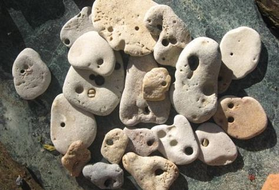

What Are Hag Stones? Everything You Need to Know About Hag Stones
Hag stones, also known as witch stones, adder stones, hag rocks, holey stones, or Odin stones, are geological wonders shrouded in folklore and mystery. These stones, with their naturally formed holes, have captivated human imagination for centuries, inspiring legends, beliefs, and practical uses across cultures. This article aims to explore every facet of hag stones, from their geological formation to their cultural significance, practical applications, and how to care for and use them in various DIY projects. Whether you're a seasoned rockhound, a budding geologist, or simply someone fascinated by the natural world, this comprehensive guide will provide everything you need to know about hag stones.
What Are Hag Stones?
Hag stones are natural rocks with holes through them, usually formed through the process of erosion by erosive forces of water, or sometimes even living organisms, making each hag stone a unique artifact of natural processes. Due to their distinctive appearance and the mystique surrounding them, hag stones have acquired a variety of names in different cultures:
- Witch stones: In European folklore, they were often associated with witches and their magical powers.
- Adder stones: Some believed they were created by snakes and could cure snakebites.
- Holey stones: A straightforward descriptive name for their defining characteristic.
- Odin stones: In Norse mythology, they were linked to Odin, the god of wisdom and magic.
Geological Formation of Hag Rocks
The formation of hag stones is a fascinating intersection of geology and natural history. They are primarily found in environments where water flow is strong enough to erode softer rock types. Over time, persistent water action, aided by the abrasive action of sand and other particles, can create a hole through the stone. In coastal areas, marine organisms such as piddocks (a type of bivalve) can also contribute by boring through the rock. The result is a stone with a smooth, naturally occurring hole, a true marvel of natural engineering.
The type of rock and the erosive forces at play determine the size and shape of the hole. For example, the softer limestone often forms larger, smoother holes, while the harder flint might have smaller, more irregular openings.
Physical Characteristics of Hag Stones
Appearance
Hag stones are characterized by their distinctive holes. These holes can vary in size, from tiny openings to large enough to pass a finger or even a whole hand through. The edges of the holes can be smooth or jagged, depending on the type of rock and the forces that created them.
The color and texture of hag stones also vary depending on the type of rock they are formed from.
Types of Rocks
Hag stones can be made from various types of rocks, each with its unique characteristics. The most common types include:
- Flint Hag Stones: Often found in chalk streams and coastal areas, flint is a hard, durable rock that can withstand significant erosion, making it a common material for hag stones.
- Limestone Hag Stones: Limestone is softer than flint and often found in marine environments. It erodes more easily, which can lead to the formation of hag stones.
- Sandstone Hag Stones: Sandstone, being relatively soft and porous, is another common material for hag stones, particularly in river environments.
Geological Features
Hag stones are often found in areas with high levels of erosion, such as beaches, riverbeds, and cliffsides. They can also be found in areas with glacial activity, as glaciers can transport rocks and expose them to erosive forces. The presence of marine fossils within limestone hag stones can also add an extra layer of interest for collectors and geologists.
The geological features of hag stones are a testament to the powerful forces of nature that shape our planet.
RELATED TOPIC: Collecting Amethyst: Exploring Its Meaning, Uses and Properties
Historical and Cultural Significance
Folklore and Legends
Hag stones are steeped in folklore and legend. In many cultures, they are considered protective talismans, capable of warding off evil spirits, witches, and negative energy. In some traditions, it is believed that looking through the hole of a hag stone allows one to see into the spirit world or detect the presence of fairies and other supernatural beings. The name "hag stone" itself is derived from the belief that these stones could protect against hags or witches.
Regional Variations
The cultural significance of hag stones can vary significantly from region to region.
In the British Isles, hag stones were often called "adder stones" and were believed to be created by snakes. They were used as charms to cure snakebites and other ailments.
In Scandinavian countries, hag stones were linked to Odin, the god of wisdom and magic. They were believed to enhance psychic abilities and offer protection from harm.
In Mediterranean cultures, hag stones are sometimes hung in homes or around the neck to protect against the evil eye.
Symbolic Meanings
The holes in hag stones have been interpreted as symbolic portals, representing a connection between the physical and spiritual realms. They are seen as a symbol of protection, good luck, and the power of nature.
Some believe that hag stones can help us see beyond the surface and access hidden knowledge or insights. They are also associated with transformation and the ability to overcome obstacles.
Practical Uses of Hag Stones
Historical Uses
Historically, hag stones have been used in a variety of practical ways. Farmers would hang them in stables to protect livestock from harm, while sailors would keep them on their ships to ensure safe voyages. They have also been used in folk medicine, with the belief that they could cure ailments or ward off disease.
Some also used them in divination practices to predict the future or communicate with spirits.
Some cultures used hag stones as charms to promote fertility and ease childbirth. They are also believed to have healing properties and were used to treat various ailments.
Modern Uses
Hag stones continue to be used for various purposes in modern times and are still valued for their protective properties. They are used in various metaphysical practices, including crystal healing and energy work. Additionally, they are popular in jewelry making, with the natural hole providing a perfect place to thread a cord or chain.
Decorative uses are also common, with hag stones. They are often used as decorative items in homes and gardens. Their unique appearance and natural beauty make them a popular choice for jewelry and other crafts.
Some people use hag stones for meditation and spiritual practices, believing they can enhance their connection to nature and the spiritual realm.
Hag stones can also be used in gardening and agriculture. They are sometimes placed in the soil to promote healthy growth and protect plants from pests.
Finding and Collecting Hag Stones
Identifying Hag Stones
Identifying authentic hag stones can be challenging, as not all stones with holes are true hag stones. Key characteristics to look for include:
- A naturally formed hole, typically smooth and rounded.
- The stone itself should show signs of natural weathering and erosion.
- The type of rock (flint, limestone, sandstone) can also be a good indicator.
Where to Look
Hag stones can be found in various natural settings, including:
- Coastal Areas: Beaches and rocky shores are prime locations for finding hag stones, particularly flint and limestone varieties.
- Rivers and Streams: Areas with flowing water can also yield hag stones, especially those made from sandstone.
- Quarries and Geological Sites: Sometimes, hag stones can be found in quarries or sites known for specific rock types.
- Cliff sides: Cliffsides exposed to the elements can be a good source of hag stones.
Buying Options
If you're unable to find hag stones in your local area, you can also purchase them online from online rock/gem marketplaces like shop.rockhounding.org or physical rock and mineral shops. Be sure to choose a reputable seller to ensure you're getting authentic hag stones.
When buying hag stones, it’s essential to ensure they are authentic and ethically sourced.
Legal and Ethical Considerations
When collecting hag stones, it’s important to be mindful of legal and ethical considerations. Some areas may have restrictions on removing natural materials, and it’s always best to collect responsibly without damaging the environment.
Ethical collecting practices include taking only a few stones and leaving plenty for others and future generations to enjoy. Avoid disturbing the environment or removing stones from protected areas.
Gearing Up for Your Hag Stone Hunt
Preparing for a hag stone hunting expedition can be as simple or elaborate as you like. Here's a basic gear list to get you started:
How To Pick Your Pick
A reliable rock pick is essential for any rockhound. It helps in extracting specimens from the ground and breaking apart rocks to reveal hidden treasures. Check out our comparison table to find the rock pick that works best for you.
See Comparison Table
Backpacks & Bags That Fit Just One More Rock
Sturdy backpacks and bags are important for carrying tools and collected specimens. Look for ones with multiple compartments and durable materials. Check out our comparison table to find the bag that works best for you.
See Comparison Table
Chisels & Brushes
Chisels are used to split rocks and access hidden specimens, while brushes help clean dirt off rocks and minerals, revealing their true features. Check out our comparison table to find the chisels and brushes that work best for you.
See Comparison TableGloves
Protective gloves are crucial for safeguarding your hands from sharp edges and rough surfaces. Check out our comparison table to find thegloves that work best for you.
See Comparison Table
Glasses
Safety glasses are essential to protect your eyes from flying debris when using tools. Always wear them to ensure your safety while rockhounding. Check out our comparison table to find safety glasses that work best for you.
See Comparison Table
First Aid Kits
A well-stocked first aid kit is a must-have for any outdoor activity. Ensure it includes bandages, antiseptics, and other essentials. Check out our comparison table to find the first aid kit that works best for you.
See Comparison TableAdditional tips for a successful hunt:
- Research: Learn about the geological formations in your area and where hag stones are most likely to be found.
- Time your search: Tide changes can expose new hag stones on beaches, so plan your visit accordingly.
- Look closely: Hag stones can be camouflaged among other rocks, so take your time and scan the area carefully.
- Be patient: Hagstone hunting requires patience and perseverance. Don't get discouraged if you don't find anything right away.
Caring for Hag Stones
Cleaning and Maintenance
Hag stones are relatively low-maintenance, but they can benefit from occasional cleaning. To clean a hag stone:
- Rinse the stone in warm water to remove surface dirt.
- Use a soft brush or cloth to gently scrub the stone, avoiding harsh chemicals.
- For stubborn dirt, a mild soap solution can be used, followed by thorough rinsing.
Storing and Displaying
To store and display hag stones:
- Keep them in a dry, cool place to prevent damage.
- Consider using a display case or shelf to showcase their unique beauty.
- For those used in jewelry, regular inspection and cleaning can help maintain their appearance.
DIY Projects with Hag Stones
Hag Stone Jewelry Making
Hag stones make excellent focal points for jewelry. To create a simple hag stone necklace:
- Select a hag stone with a suitable hole size.
- Thread a cord or chain through the hole.
- Add any additional beads or charms if desired.
- Secure the ends of the cord with a clasp.
Hag Stone Wind Chimes
Creating a wind chime with hag stones:
- Collect several hag stones of varying sizes.
- Drill holes in the tops of the stones if needed.
- Thread string or wire through the holes.
- Attach the stones to a piece of driftwood or a metal ring.
- Hang the wind chime in a location where it can catch the breeze.
Decorative Items with Hag Stones
Hag stones can also be used in various decorative projects:
- Garden Ornaments: Arrange hag stones in a garden to create a mystical, natural look.
- Home Décor: Place hag stones in bowls or on shelves as unique conversation pieces.
- Art Projects: Incorporate hag stones into mixed media art or sculptures.
Conclusion
Hag stones are more than just interesting geological formations; they are steeped in history, culture, and practical use. From their natural formation and physical characteristics to their cultural significance and modern applications, hag stones offer a fascinating glimpse into the intersection of nature and human belief. Whether you're collecting them for their beauty, their purported protective properties, or their unique place in folklore, hag stones are a wonderful addition to any rockhound's collection.
We hope this comprehensive guide has inspired you to explore the world of hag stones further. Whether you're out in nature looking for your hag stones or creating beautiful DIY projects with them, these unique rocks are sure to bring a touch of magic and wonder to your life.